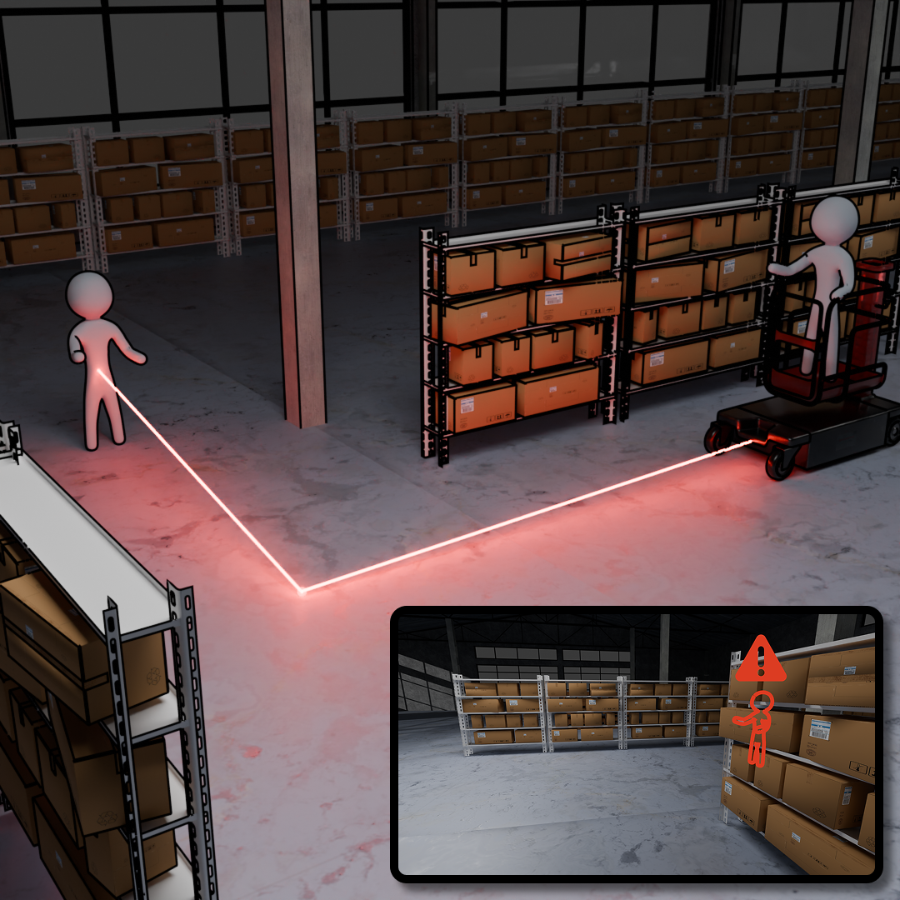
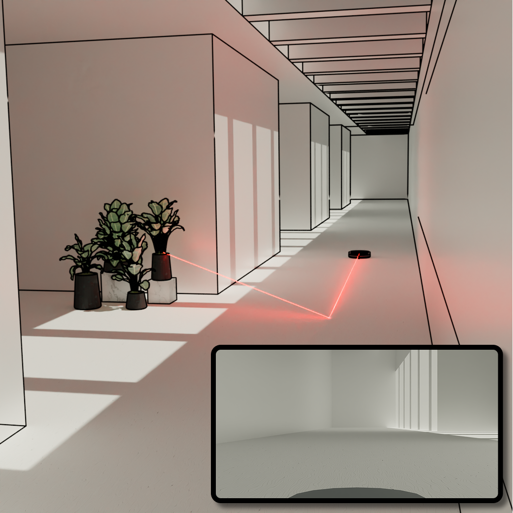
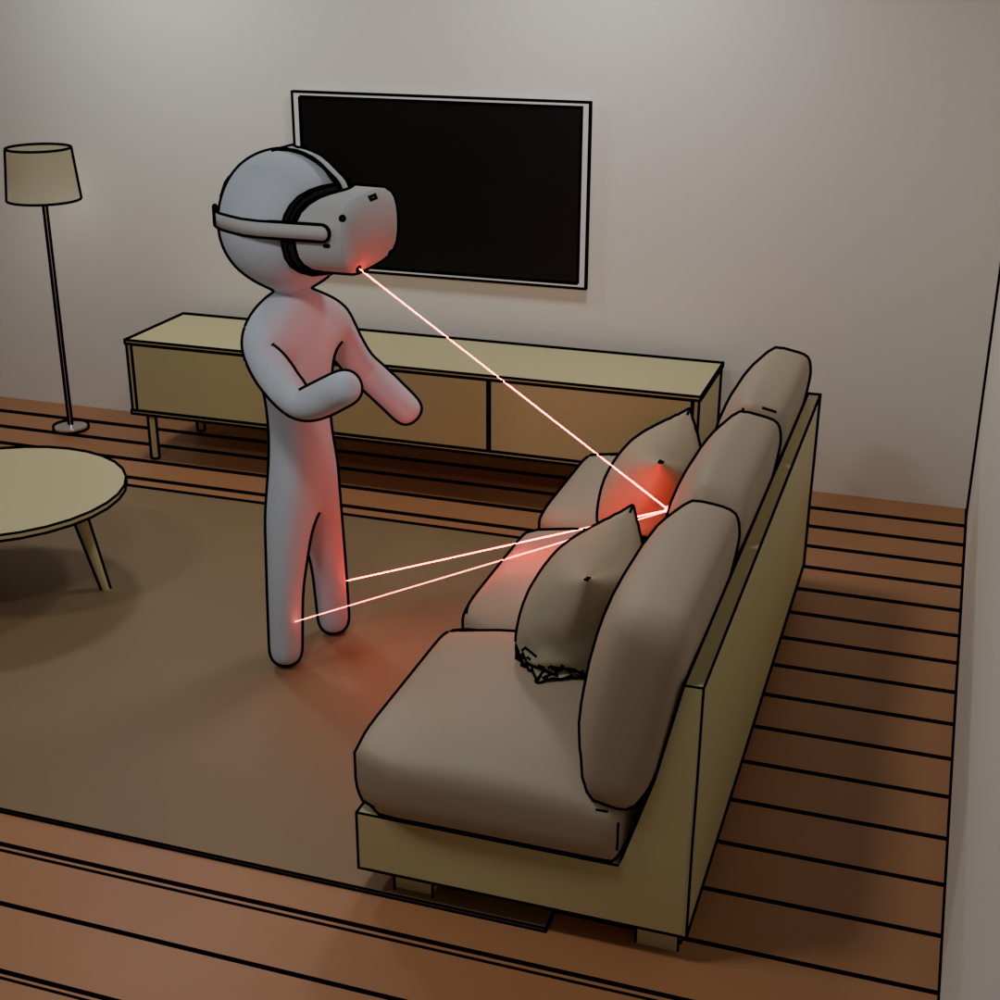

Seeing Hidden Objects with Consumer LiDAR
-
Siddharth Somasundaram
MIT -
Aaron Young
MIT -
Akshat Dave
MIT -
Adithya Pediredla
Dartmouth College -
Ramesh Raskar
MIT
| Tracking Hidden Objects | |
|

For safety critical applications, we want to be able to track hidden objects in real-time to avoid colliding with them.
|
|
| Using Hidden Objects to Localize Yourself | |
|

Autonomous robots need to keep track of their location in real-time while navigating through unknown environments.
|
|
| Pose Reconstruction and Tracking | ||
|

AR systems need to be able to determine the user's body pose to provide seamless integration with the virtual world.
|
Hand Tracking
|
Pose Reconstruction
|
| Try it yourself! | |
|
|